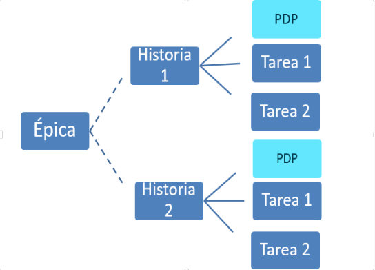
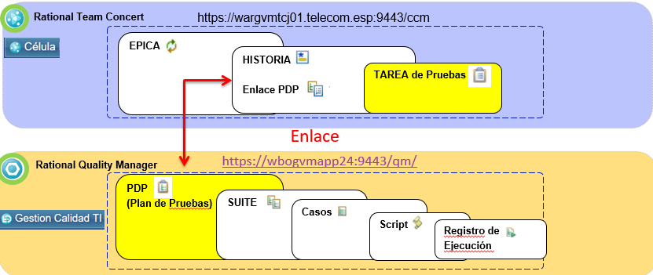

Rational Team Concert (RTC) Y Quality Manager (QM)
Recordando dependencias flujo ágil RTC

Relación RTC --> RQM

Flujo Tarea en RTC y Relación con RQM
- Se debe Crear un PDP en RQM con los respectivos Set, Casos y Script para poder enlazarlo con la Historia: (PDP , Set y Casos en estado Aprobado)
- Antes de Terminar la Tarea en RTC se deben ejecutar TODOS los respectivos Set / Casos desde RQM.Los Casos que no se lograron ejecutar dentro del Sprint se colocan en estado : Deferred / Diferido (para tenerlos en cuenta si aplican para el próximo Sprint)
Relacionando la Tarea de RTC al PDP en RQM
- Desde la Historia en RTC se debe agregar el PDP en la pestaña “Enlaces” opción : “Add Related” --> Add Related Test Plan

Nomenclaturas de PDP
PDP
- PDP_NombreCélula_Sprint#_HU####_BreveDescripción
Ejemplo:
- PDP_APILUS_Sprint1_HU34151_BotonPagos
- PDP_SAAC_S34_HU36113_RecargaEnLinea
Nomenclaturas de Suite
Suite
- #PDP_TipoDePruebas (Tipos de Pruebas: Smoke , Insumo, Modular, Integral, No_Funcional)
- Ejemplo: 4122_PruebasModulares
- #PDP_PruebasSmoke
- #PDP_PruebasModulares
- #PDP_PruebasIntegrales
- #PDP_PruebasNoFuncionales
- #PDP_PruebasInsumo
- #PDP_PruebasContinuidad
Nomenclaturas de Casos
Casos de prueba
-
SM_Aplicativo_Componente_Accion
- Ejemplo:SM_APP_POS_ConsultaSaldo
-
IN_Aplicativo_Producto_Caracteristica
- Ejemplo:IN_APP_POS_ClienteDeuda
-
CM_Aplicativo_Producto_Verbo_Accion
- Ejemplo: CM_APP_POS_Modificar_Imei
-
CI_FlujoNegocio_Producto_Segmento_Actividad
- Ejemplo: CI_SCL_POS_Corporativo_VentaE2E_ConsultaAPP
-
CNF_AplicativoAprobar_TipoPrueba_AplicativoPrueba_Modulo
- Ejemplo: CNF_APP_Carga_ServicioConsultaSaldo_MetodoPrepago
Para conocer más acerca de los casos de prueba, Ingresa aquí